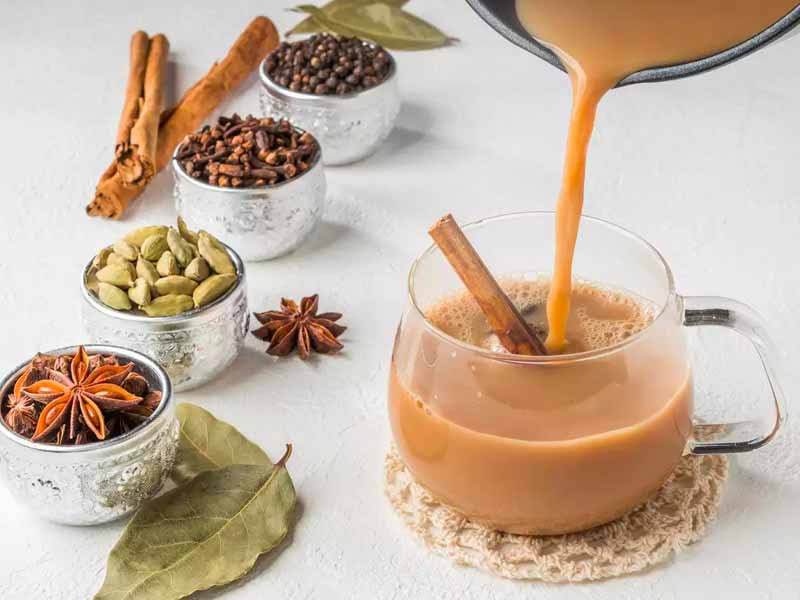

Az earlgrey Olaszországban termesztett bergamot narancs olajával illatosított, ízesített fekete tea.Az english breakfast eredetileg kínai fekete teák, de ma már ceyloni, sőt akár assami, kenyai és afrikai fekete teák keveréke is lehet.A prince of wales nem olyan erős, csersavas karakterű, mint a többi breakfast keverékű fekete tea, fogyasztása tej nélkül is kellemes.

A masalachai az indiaiak mindennapi teája: fűszeres, tejes fekete tea.A gunpowder tea egy tajvani és kínai zöld tea, amely rendkívül magas koffein tartalommal bír.A citromfű egy nyugtató gyógytea.
A bancha Japánban és Tajvanon termesztett zöld tea. Íze frissen fanyar, koffein tartalma alacsony.A kamilla tea enyhíti felső légúti panaszokat.